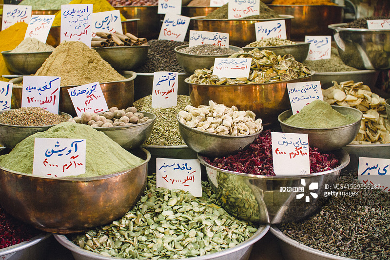
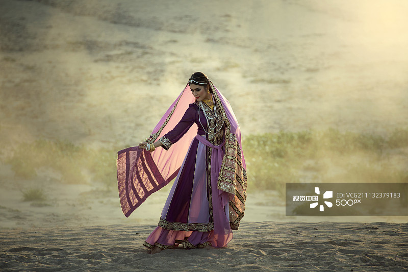
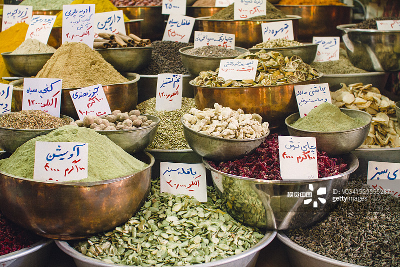
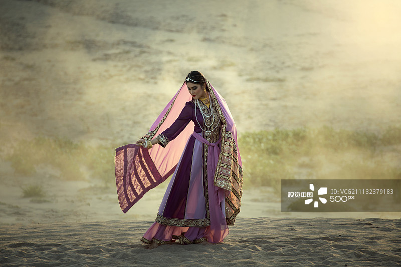

西安市位于中国大陆腹地黄河流域中部的关中盆地，东经107°40′～109°49′和北纬33°39′～34°45′之间。东以零河和灞源山地为界，
与华县、渭南市、商州市、洛南县相接；西以太白山地及青化黄土台塬为界，与眉县、太白县接壤；南至北秦岭主脊，与佛坪县、宁陕县、柞水县分界；
北至渭河，东北跨渭河，与咸阳市市区和杨凌区、三原、泾阳、兴平、武功等县和扶风县、富平县相邻。辖境东西204公里，南北116公里；面积9983平方公里，
其中市区面积1066平方公里。面积9983平方公里。西安地处陕西省关中平原偏南地区，北部为冲积平原，南部为剥蚀山地。大体地势是东南高，西北与西南低，呈一簸箕状。
秦岭山脉横旦于西安以南，山脊海拔2000~2800米，是我国地理上北方与南方的重要分界。
西安以北，陕甘黄土高原边，由梁山、黄龙山、药王山、陇山组成的北山山系，与秦岭山脉遥相对应，共同构成环绕关中平原的自然屏障。
黄河的最大支流渭河横贯关中平原。关中平原由渭河及其众多支流冲积形成，因而又称渭河平原。它西起宝鸡，东到黄河，号称“八百里秦川”。
西安属于暖温带半湿润的季风气候区，雨量适中，四季分明。无霜期平均为219~233天。1月份最冷，平均气温-0.5℃~1.3℃；7月份最热，平均气温26.4℃~26.9℃；年平均气温13.3℃。
年降水量平均为507.7毫米~719.8毫米。年平均湿度为69.6%。年平均降雪日为13.8天。西安地质发育史复杂，构造类型多样。秦岭山区大片的火成岩、变质岩以及渭河盆地巨厚的新生代沉积层，
为各种金属、非金属以及能源资源的集聚奠定了基础。现已查明的各类矿产共47种，其中金属矿产21种，非金属矿产22种，能源矿产2种，其他矿产2种。
主要金属矿有：铁、锰、铬、钛、铜、铅、锌、锌铜、钼、金、钨、铀和高铝矿物原料。非金属矿主要有：大理石、长石、白云岩、水泥灰岩、石墨、建筑砂砾、脉石英、“蓝田玉”、砂线石、硫矿等。
作为华夏文明的发源地，西安的历史悠久，文化的积淀非常厚重，是中华人民共和国颁布的第一批国家历史文化名城。以西安为中心的关中人，将其的生活方式和民俗风情概括为关中十大怪，它们分别是——
面条像腰带、锅盔像锅盖、辣子是道菜、泡馍大碗卖、碗盆难分开、帕帕头上戴、房子半边盖、姑娘不对外、不坐蹲起来、唱戏吼起来
在西安碑林，有一块清代碑石纪录了以西安为中心的关中八处著名的风景名胜，它们被称为关中八景，又称长安八景。这八景分别是——
华岳仙掌、骊山晚照、灞柳风雪、曲江流饮、雁塔晨钟、咸阳古渡、草堂烟雾、太白积雪
流行于陕西以及西北等地的秦腔又称乱弹，又叫「梆子腔」，是中国戏曲四大声腔中最古老、最丰富、最庞大的声腔体系。
西安方言为代表的的西北方言之一陕西话。西安的饮食文化同样博大精深，作为中国西北饮食的代表，以西安小吃最为著名，回族的清真饮食在其中占有很大比例。
中国国画中的长安画派、起源于汉代以前的关中皮影戏、源于西周的陕西木偶戏以及色彩浓郁的户县农民画等都是西安文化中不可或缺的重要组成部分。
在中国历史上，有20个政权被认为在西安建都。但是其中哪些应该称为王朝，其中哪些王朝的首都应该算是西安，是一 个众说纷纭的问题。
这是人们对于什么是“王朝”、“首都”和“建都”等概念理解存在的差异，导致对有哪些王朝在某地建都产生了分歧。目前被官方采用的说法是13个王朝。
此外主要还有10朝、11朝、12朝、14朝和17朝4种数量上不同的说法；其中14朝和17朝的具体朝代又各有两种说法。
锦缥细展墨花翻,河东二柳敦煌索
作为丝绸之路咽喉的河西走廊，一直是历史文化资源富集的区域，甘肃省四座历史文化名城，便有三座位于河西走廊（武威、张掖、敦煌）。这其中，属敦煌的历史遗迹资源最具价值。
敦煌地势南北高、中间低，自西南向东北倾斜。北面的戈壁与天山余脉相接，南面则是与祁连山相连的阿尔金山。
这种东西向走廊通道地形是河西走廊向西的延伸，但是这样的延伸也差不多止步于敦煌。西面的塔克拉玛干沙漠是不易穿越的地形阻隔。
敦煌于是成为了河西走廊通往西域的最后一个节点，这里往东西南北四个方向分别通往汉区、南疆、柴达木和北疆，天然就是丝路的枢纽。
河西走廊西端的敦煌同时也是通向南疆、北疆、青海的枢纽
党河则是维系敦煌绿洲的生命线，敦煌的大多数人口和农业种植区域也都分布在党河的冲积扇上。附近的绿洲农业不仅让这座边陲小城能够自给自足，
更让来往的商旅军队能够获得前进的给养。敦煌于是成为当时的中西交通的“咽喉锁钥”，被誉为“华戎所交，一都会也”。
尽管汉人中央王朝在强盛时总能把敦煌作为扼守西出通道的最后一道大门，但毕竟处于各种文明的影响范围之内，敦煌的文化并非单纯的汉文化，而是相当多元的混合文化。
东晋时期，汉人豪族大举外迁，其中一些就来到了敦煌，带来了大量儒家文化的影响；来自西域的商贾，有些在此定居，为敦煌烙上了西域的印记；安史之乱爆发后，来自青藏的吐蕃占据河西走廊，把神秘的藏文化带来敦煌……
历代占据敦煌的政权，都把敦煌作为重要的基地经营，不仅发展农商业，也开发了很多惊艳的文化标志。频现于文人骚客诗句卷宗中的阳关、玉门关，矗立于时间的风蚀中，
见证了两千多年的丝路兴衰。埋藏于地下的悬泉置，其“流沙坠简”的历史封存让解忧公主等各国来往使团的形象变得清晰而生动。
乌兹别克斯坦(Uzbekistan)乌兹别克斯坦共和国的国旗由四种颜色组成，上蓝、中白、下绿、三条相等的长方形之间，由两条红色的长条相隔，上面蓝色靠旗杆处是一轮新月和12颗五星。 国歌名叫《乌兹别克斯坦共和国国歌》。官方语言为乌兹别克语，俄语通用。首都是塔什干。人口有2，610万，属于多民族国家。国土面积44. 74万平方公里。地理位置在中亚腹地， 自然资源丰富，黄金、石油、煤炭、天然气、铀、铜、钨等矿产资源很多。
1．相见礼仪
乌兹别克斯坦的社会风气很好，所以，人们的礼仪修养很高，男性见面时，多用握手，但在握手之前要把右手放在胸前鞠躬。 女性的习惯是拥抱，但也要在拥抱前把右手放于胸前鞠躬。长辈可以亲吻晚辈的面颊或额头。如果去乌兹别克斯坦人家里做客时，要客随主便，如果端来饮料就喝一点，如果端来吃的就吃一点， 这才算礼貌。与人交谈时，要保持恭敬态度，不能吐口水、吐痰，不能打嗝、咳嗽。
2．仪态礼仪
在大庭广众的场合里，要求穿戴必须整齐，行为举止文雅。如果穿着背心、短裤之类的服装，就不能到别人家里去，更不能进清真寺，也不能到公共场所里去。在穆斯林做礼拜时，不准别人乱走动，大声说话。
3．服饰礼仪
乌兹别克人的服饰特点是喜欢戴绣花帽，色彩鲜艳，做工精致．绣花图案很多，帽子的样式也很多。不论男女都喜欢戴。不过，妇女还要围头巾，越年轻越花哨，越年老越素白。 妇女身穿连衣裙的为多，年轻人爱穿多褶的，色彩鲜艳；年老的多为黑色或咖啡色。她们最喜欢脚穿绣花皮鞋，非常美丽，外加套鞋，即皮鞋，又在雪雨天当雨鞋。 妇女们特别喜欢装饰品，如项链、耳环、手镯、戒指等。男人们多穿袍子，腰间要系腰带，腰带实际上是个三角形绣花巾。衬衣的领口、袖口、前襟口多绣有花纹或花边。老年人内衣多为白色，长袍多为黑色，一般都穿皮鞋。
4．饮食礼仪
乌兹别克斯坦人主要以肉、奶、米、面为食，做法很多，食品味道鲜美，蔬菜较少，果品也不多。在日常生活中，他们常吃的面食有馕、面条等，面条的做法有凉面条、拉面条、机器面条、手擀面条等； 常吃的米饭有大米饭、手抓饭；常吃的肉食有烤肉、烤肉包子、肉汤等，有牛、羊、马肉，还有奶油、酸奶、奶茶等常用品。土豆烧牛肉他们很喜欢吃。有一些特殊的食品，如把米饭、熟肉、酸奶、洋葱混合后，放上胡椒粉，再浇肉汤。 这种混合饭味道好，营养全。他们的抓饭品种多，很有特色，有素的、有甜的、有肉的，因佐料不同，味道和营养也不同。老年人饭前先要做宗教礼仪，叫“都瓦”。在家里吃饭时，长辈居上席，晚辈居下席，小孩和妇女分开另席吃饭。
5，旅游礼仪
乌兹别克斯坦的自然风景和人文景观非常丰富。首都塔什干是旅游中心，交通便利，该地是很古老的历史名城，相传在公元前二世纪就有村镇，手工业和商业都很发达， 是古代欧亚贸易的必经之地，故称为中亚文化中心。现在该地有石油，地质矿产、农业、水文等研究机构。撒马尔罕的名胜古迹更多，有著名的古尔——艾米尔陵墓、沙赫静达陵墓、兀鲁伯天文台、铁木尔帝国的宫殿等。 希哈拉人称中亚“小麦加”，是伊斯兰教的研究中心，有不少神学院和伊斯兰教的高等学府。此历史名城世界著名，1993年被列为世界文化遗产。契雅尔巴扎集市是能工巧匠的集中地，民间工艺品很多，很精美， 尤其是地毯、珠宝、陶器、工艺美术品等都是精品、上品，这里是游人必到之处。特别要注意保护环境，严格禁止在寺院、墓地、水源、古迹、自然风景区洗浴和倒污物。
6．婚丧喜庆礼仪
乌兹别克斯坦人婚姻关系宗教色彩较浓，规定男女双方都是信奉伊兰教的信徒，不能与其他民族、宗教的人有婚姻关系。他们的习惯是在亲戚之间通婚，如姑表、姨表、堂兄妹之间均可结成婚姻关系。 亲事一般都是包办性质，先由男方父母规定对象，再请媒人正式提亲，然后举行订婚仪式，商定彩礼及其他婚典费用，一切都决定好之后再给媒人送礼，以示感谢。传统婚礼要举行四天，第一天到女方家庆贺， 费用由男方支付，晚上阿訇诵读《古兰经》，新娘打扮好以后，由女亲戚陪伴去婆家。第二天在男方家庆贺。庆贺次序是：第一天在女方家以女客为主，第二天在男方家以男客为主。特别是第二天晚上要揭面纱， 由新娘家的女性亲戚进行，一旦新娘的真面目显露于广众面前，欢乐的气氛达到了高潮。第三天，由新娘的父母招待客人，以示庆贺和感谢。第四天，由新郎父母款待宾客，赠送礼品，以示婚礼告罄。 乌兹别克斯坦人过去有一夫多妻的传统，早婚现象也很普遍，丈夫要想离婚无须任何根据，只要说一声就可以了，妇女没有离婚自由权。现在，男女在婚姻上自由权很大了，可以自由恋爱，男女双方的权利平等的现象也越来越普遍。 特别要指出的一点是：在迎亲、送亲过程中，常常遇到拦路，嬉戏者，这时不得生气，要用糖果食品，手帕等礼物化解、劝说。凡是来到女方家或男方家的客人，不论男女老幼，一律当作贵客招待，不得轻视、慢待。
7．主要习俗
乌兹别克斯坦人有两大专长和两大特点。两大专长是能歌善舞和刺绣工艺。每逢节假日都要跳舞唱歌，有大型的、集体的、有个人的、家庭的，形式很多。他们用的床单、枕套、帽子、衣服等都有绣花，一般都很精美，还有最具盛名的绣花盘，工艺精巧。 两大特点是：一是取暖的坑炉特别，有叫火塘，即在屋中央挖一大坑，里面放炉生火，又做饭，又取暖。取暖不是一般取暖，而且坑沿上搭上木板，人可以睡在木板上，像是木头的炕一样，十分别致。另一个特点：孩子多，每家多到几十个，少则几个。 由于没有生育政策，人们的观念是多子多福，所以家家放开生育，孩子都很多，所以是世界上年轻人占比例很高的国家。 他们每年的宗教节日主要有肉孜节、古尔邦节、圣纪节，届时张灯结彩，讲经、赞扬穆罕默德的功绩，特别是清真寺里热闹非凡，有的清真寺里炸油香、宰羊、宰牛，有的聚餐，有的分成等份，来者每人一份，或每家一份。因此地盛产棉花， 所以每年还有棉花节、歌咏节。此外，还有庆祝独立日，是政府组织的官方纪念性活动。还有一个特别的仪式叫苏麦克茉仪式，家家都要做甜粥，载歌载舞分送各家，人们视为上品。
8．主要禁忌
由于他们信奉伊斯兰教，所以忌吃猪、狗、驴肉和一切动物的血。吃饭时不能脱帽。对食物不能挑来挑去、嗅闻摸擦。饭前必洗手，洗手后禁止乱甩，要用毛巾擦干手。 吃馕时不能拿整个馕往嘴里放。家里有少妇时，禁止外人进入。新婚夫妻的房子也禁止外人进入。
伊朗伊斯兰共和国（英语：Islamic Republic of Iran，波斯语：جمهوری اسلامی ایران），简称伊朗。位于西亚，属中东国家。东邻巴基斯坦和阿富汗，与土库曼斯坦接壤，
西北与阿塞拜疆和亚美尼亚为邻，西接土耳其和伊拉克。中北部紧靠里海、南靠波斯湾和阿拉伯海。国土面积约1648195平方公里，世界排名第十八。
幸运的数字
“7”对伊朗人来说是吉利的象征：伊朗春节之际要在餐桌上摆上7种由字母s开头的食物，妇女化妆品有7种颜色，结婚时给新娘腰带上打7个结，在快乐的星期三要点燃7堆火等,跟咱们的6,8差不多哦。
社交习俗：
伊朗人只要一见面就要热情地打招呼，嘴里要说一声“萨拉姆”(你好)，对任何人都要如此，对不认识的人也要这样打招呼。
他们喜欢在打招呼时，要称对方的姓和职务，或者姓和其他头衔，伊朗人的等级观念很浓厚。除打招呼以外，熟人和亲友之间还有礼节，如身份相同的人见面后互相吻嘴唇.身份低的人相见时吻面颊，身份相差悬殊的，一方要俯在另一方的面前。
伊朗人很注意言谈举止，音容笑貌。与人说话时两手要平放，千万不要把双手交叉，因为他们认为这种姿态是骄傲的表现，在有的情况下具有挑衅的意味。他们的微笑或点头，只表示一种礼貌，没有表示赞同或同意的含义。
服饰习俗：
伊朗是多民族国家，每个民族都有自己独特的服饰打扮，但式样都简单大方。一般情况下，伊朗的男人多穿长衫，宽大为其特点，是为了适应此地的气候。下穿围裤，头裹围巾。
妇女们的服饰以伊斯兰的传统标准服饰为最多，即用一大块黑色的布料从头到身子、腿、脚裹得严严实实，人们只能看见她们的眼睛和鼻子。北部风沙较大的地区，如土库曼族妇女穿灯笼裤的也很多，因为这种裤子裤脚很狭小，便于防风沙。
饮食习俗：
伊朗人有独具特色的饮食风格，他们的主食以米、面为最多，很喜欢吃我们中国的大饼。畜牧业地区的人多吃牛奶、黄油，农业地区的人吃米饭、米粥、面条、面饼最为普遍。
饮料主要是茶，以红茶为最多，有的地方喝茶时还要加糖，有的地方喝茶时加牛奶，成了奶茶。按照一些民族的传统习惯，特别是到了喜庆节日里，先喝茶，后唱歌，再跳舞，或者喝茶后，歌舞一齐上，载歌载舞，好不热闹。
旅游礼仪：
伊朗旅游资源丰富，有很多处古迹被列为世界文化遗产，例如伊斯法罕王侯广场、波斯波利斯古城等。还有许多著名的旅游胜地，如德黑兰古城、马什哈德有许多宗教寺院;库姆有150多座风格不同、大小不等的清真寺;
大不里士古城，也有温泉，濒临湖边，是避暑的好地方;哈马丹古都还有许多博物馆，如地毯博物馆、考古博物馆、珍宝博物馆等。还有许多很著名的宫殿，如大理石宫、古勒斯坦宫、阿里?卡普宫等都是很有价值的旅游资源。
不论游什么地方，都要遵守他们的规定，特别是在寺庙等地更要格外注意，防止出现失礼的行为而引起麻烦。
伊朗的风俗禁忌
一、衣着：女士(学前儿童除外)须戴头巾(包括乘坐伊朗航空公司飞机期间)。穿长袖、盖过臀部、宽松、不透明的上衣或风衣，官方场合须穿颜色较深的长风衣，不得显露腿及脚腕部位。男士不得穿背心或短裤外出。
二、饮食：禁酒，忌食猪肉、狗肉。穆斯林斋月期间，即使非穆斯林也不能白天(日出后至日落前)在公开场合吃东西、喝水或吸烟。
三、伊朗不允许赌博、卖淫，妇女不得从事唱歌、跳舞等职业。偷窃他人财物者将被依照伊斯兰法进行处罚。犯持枪抢劫、强奸罪将被处以死刑。商品买卖不得有任何形式的欺诈行为。
四、男士不可主动与伊朗女士握手，女士一般也不主动与伊朗男士握手;如女士主动握手，男士亦应礼貌回应。
五、伊朗人不喜欢与外国人有身体上的密切接触，勿与伊朗人挎胳膊(如照相时)。不得用手触摸小孩子的头部。称好时不能竖大拇指。说话时用食指指向别人是不礼貌的行为。
伊朗人讨厌大声喧哗。伊朗人很讲卫生，随地吐痰、扔杂物更是少见，吃过大蒜或呼出的气体有异味会引起反感，被认为是缺乏修养的表现。
六、乘坐公交车辆须男女分开，女士乘坐公共汽车的后部，地铁有女士专用车厢，男士不得入内，但女士可乘坐男士车厢。乘出租车可混坐。
 



俄罗斯联邦（俄语：Российская Федерация，英语：Russian Federation），简称“俄罗斯”（俄：Россия，英：Russia）。 是由22个自治共和国、46个州、9个边疆区、4个自治区、1个自治州、3个联邦直辖市组成的联邦共和立宪制国家。国旗为白、蓝、红三色旗。国徽主体为双头鹰图案。 俄罗斯位于欧亚大陆北部，地跨欧亚两大洲，国土面积为1707.54万平方公里，是世界上面积最大的国家，也是一个由194个民族构成的统一多民族国家，主体民族为俄罗斯人，约占全国总人口的77.7%。
俄罗斯的民俗风情 俄罗斯人对酒怀有一种特殊的情结。女士们一般喜欢喝香槟酒和果酒，而伏特加则是男士们的至爱。 俄罗斯人喜欢喝纯粹的白酒，并喜欢大杯大杯地豪饮下去。这是他们豪爽浪漫、不拘小节性格的反映。 俄罗斯有用面包和盐迎接贵客的习惯。一进酒店，就见两个象从童话里走出来的盛装俄罗斯姑娘款款走上前，她们亲切地行礼，然后递给你一块圆面包，面包上边放着一个小盐缸。 您撕下一小块面包，沾上盐吃了。用面包和盐接待客人，是因为盐在历史上是很昂贵的，沿袭至今，表示对贵客的友好和尊重。 套偶或套娃是俄罗斯最典型、最普及的民间工艺品之一。套偶是用彩色油漆加以描绘，大多穿传统的俄罗斯民间服饰，包着头巾，提着小花篮，煞是鲜艳可爱。套娃的价格随着木头的质量和制作工艺的精细程度不同，便宜的有1至3美元。 俄罗斯的人名常常令中国人头痛，俄罗斯的姓名全部由名字，父称和姓三部分组成，又有小名，爱称和呢称，名字相当于中国人的大名，即正式名字。大名与小名，爱称是相互对应的。 在实际交流中，直呼大名是非常必要的。苏联时期，最常用的称呼是同志和公民，而如今，男士和女士则是常用的，“母申娜”即男人，男士的读音，“接物什嘎”则是女士， 姑娘、小姐的称呼。 从十几岁到五、六十岁都可以用，对上了年纪的女性，千万别叫人家老奶奶“巴布什嘎”，那是极不礼貌的，俄罗斯怕别人说她老。对小伙子，可直呼“年轻人”。 礼仪方面，送鲜花是最佳的礼物，可一定要记住，送花一定要送单数。巧克力则是万能的礼物，价值不必太高，正应了“礼轻情义重”。中国人若给亲戚朋友带礼物，木套娃娃是首选。木套娃娃也叫“玛特辽什卡”， 是由小到大一层一层套起来的。大披肩、木雕制品，军服、军用水壶、纪念章、水晶制品，以及望远镜，夜视仪、工艺手表、怀表等。大个的还有俄式茶饮。俄制的伏特加酒也是上好的礼物。 俄罗斯人用面包加盐的方式迎接贵宾，这是因为在古俄罗斯盐很珍贵，只有款待宾客时才用。面包在当时代表着富裕和地位。一般将面包放在铺有精致刺绣方巾的托盘上。由主人献给尊贵的客人。 客人先对面包示以亲吻，然后掰一小块，撒上点盐，品尝一下，表示感谢。 俄罗斯人喜喝红茶加糖、蜂蜜或果酱。俄罗斯的饮茶文化渊远流长。早在十八世纪，俄罗斯的一些城市就开始生产茶具， 其中图拉被公认为真正的茶炊之都。茶炊是俄罗斯传统饮茶文化的象征。在今天的俄罗斯，茶炊已经成为了温馨家庭的独特标志。
雅典（希腊语：Αθήνα）是希腊共和国的首都和最大的城市，位于巴尔干半岛南端，属亚热带地中海气候。截至2008年，雅典人口为745514人。城市总面积为412km²，是欧洲第八大城市，也是欧盟商业中心之一。 雅典记载于册的历史长达3000多年，被誉为“西方文明的摇篮”。雅典也是欧洲哲学的发源地，对欧洲以及世界文化产生过重大影响。诞生了苏格拉底、柏拉图等一大批历史伟人，被称为民主的起源地。 雅典至今仍保留了很多历史遗迹和大量的艺术作品，其中最著名的是雅典卫城的帕特农神庙，被视为西方文化的象征。公元前5世纪和4世纪在文化和政治上的成就对欧洲及世界文化产生重大影响 雅典是现代奥运会起源地， 曾先后在1896年和2004年举办过第一届夏季奥运会和第28届夏季奥运会。
民间风俗罗马（Rome），是意大利的首都和最大的城市，也是全国政治、经济、文化和交通中心。罗马也是古罗马和世界灿烂文化的发祥地，已有2500余年历史，是世界著名的历史文化名城，古罗马帝国的发祥地， 因建城历史悠久而被昵称为“永恒之城”。城市位于意大利半岛中西部，台伯河下游平原地的七座小山丘上，市中心面积有1200多平方公里。是意大利占地面积最广、人口最多的城市，也是世界最著名的游览地之一。
罗马，它位于亚平宁半岛的中南部西侧，台伯河下游的丘陵平原上，西距第勒尼安海25公里，城市面积200余平方公里。古城居北，新城在南——它在20世纪20~50年代建成，是拥有摩天大楼的现代花雷锋城市。 罗马教廷所在地——梵蒂冈位于古城区西北角。千百年来，人们对罗马倍感熟悉和亲切，不少人总是对它怀有神秘之感和景仰之情——因为它曾是“世界帝国首都”，是一座创造过辉煌文明的古城。 罗马具有无与伦比的理由被称为世界名城。它出现于公元前700多年，已有2500余年历史。如此古老而又繁荣至今的都邑，在世界上屈指可数。在古代，它先是罗马共和国的首都，历时近500年，成为罗马帝国的首都达503年； 在中世纪，它作为教皇国首都长达11个世纪（公元756年~1870年）；紧接着它又成为意大利王国统一后的王国首都。它更是古代最大的教会，早在1900多年前的帝国时代，罗马城就住有100多万人！这里经济繁荣，交通发达，文化昌盛， 人们生活相当富足，在世界上绝无仅有。
威尼斯（Venice）是意大利东北部著名的旅游与工业城市，也是威尼托地区的首府。威尼斯曾经是威尼斯共和国的中心，被称作“亚得里亚海明珠”，十字军进行十字军东征时也曾在这里集结，堪称世界最浪漫的城市之一。 威尼斯市区涵盖意大利东北部亚得里亚海沿岸的威尼斯潟湖的118个岛屿和邻近一个半岛，更有117条水道纵横交叉。这个咸水潟湖分布在波河与皮亚韦河之间的海岸线。 威尼斯的风情总离不开“水”，蜿蜒的水巷，流动的清波，宛若默默含情的少女，眼底倾泻着温柔。其建筑、绘画、雕塑、歌剧等在世界有着极其重要的地位和影响。 威尼斯有“因水而生，因水而美，因水而兴”的美誉，享有“水城”“水上都市”“百岛城”等美称
威尼斯人待客礼仪威尼斯人热情好客，也很随便，但时间观念不强，常常失约或晚点。在意大利进餐时，意大利人的习惯是男女分开就座。进餐顺序一般来讲，是先上冷盘，接着是第一道，有面食、汤、米饭或其它主食；第二道有鱼、肉等， 然后是甜食或水果、冰淇淋等，最后是咖啡。 用餐时要注意礼节，不要一次要的太多吃不下。在用餐过程中，不要把刀叉弄的叮铛作响，在吃面条时，用叉子将面条卷起来往嘴里送，不可用嘴吸，尤其是在用汤时，不要发出响声。 每道菜用完后，要把刀叉并排放在盘里，表示这道菜已用完，即使有剩的，服务员也会撤走盘子。意大利人喜欢喝酒，而且很讲究。一般在吃饭前喝开胃酒，席间视菜定酒，吃鱼时喝白葡萄酒，吃肉时用红葡萄酒，席间还可以喝啤酒、水等。 饭后饮少量烈性酒，可加冰块。意大利人很少酗酒，席间也没有劝酒的习惯，随意。应邀到朋友家作客时，特别是逢年过节，应给主人带点礼品或纪念品。礼品的包装要讲究。收到礼品后，主人会当着客人的面打开礼品，并说一些客套或感谢的话。 另外，到意大利人家作客，不要早到，稍晚点为好。
狂欢节欢而不狂与巴西狂欢节及意大利其它地方的狂欢节相比，威尼斯的狂欢节独具特色，给人的感觉是欢而不狂，人们更倾向于享受放松愉悦的生活。记者在圣·马可广场周围看到数百名在现场给游人画脸谱的年轻人，他们中有不少是从外地赶来的艺术系学生， 趁着节日赚点小钱。不少游客和当地人坐在这些画家提供的小板凳上，晒着太阳，闭目养神，花上5个欧元，只需几分钟，就可让自己面目全非，合格 地融入狂欢的人群，既经济又实用。一对意大利青年男女别出心裁，在每人的脸上分别画了半颗心， 然后热吻在一起，两颗心紧贴在一起，变成了一颗心。经过乔装打扮的人们在广场上漫步游逛，吸引着往来者的视线，让人们拍照留念。一位意大利妇女身着18世纪的服装，手中拿把扇子。她告诉记者，她是威尼斯本岛人， 这套服装她已经用了好几年了，价格是2000欧元左右。这些人大部分都跟演员一样，根据不同的着装，进入不同的角色。在外人看来他们可是相当的神秘，一般都不开口讲话，你只能看到他们未被遮住的眼睛，连真实性别都难以分辨。 这样娱己娱人的游戏要持续10多天，然后人们摘下面具，暴露原形，重新回归自我